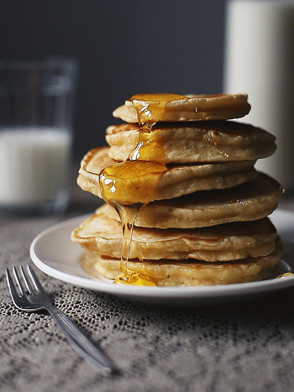

Pancake
These are the best buttermilk pancakes. They are light and fluffy with a touch of maple flavor.
Ingredients
- 2 cups all-purpose flour
- ¼ cup white sugar
- 2 teaspoons baking powder
- 1 teaspoon baking soda
- 1 teaspoon salt
- 2 cups buttermilk
- 2 large eggs
- ¼ cup maple syrup
- ¼ cup unsalted butter, melted
- cooking spray
Instructions
- Combine flour, sugar, baking powder, baking soda, and salt in a large mixing bowl.
- Whisk buttermilk, eggs, maple syrup, and butter together in another bowl. Pour the flour mixture into the wet ingredients and whisk until lumps are gone.
- Heat a large skillet over medium heat and coat with cooking spray. Pour 1/4 cupfuls of batter onto the skillet and cook until bubbles appear on the surface, 3 to 4 minutes. Flip with a spatula and cook until browned on the other side, 2 to 3 minutes. Repeat with remaining batter.